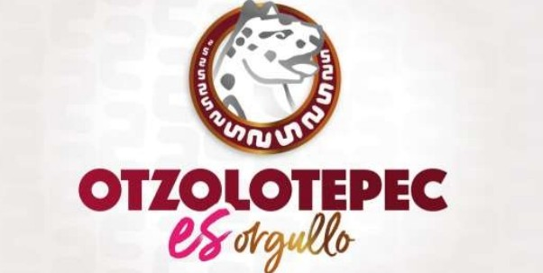
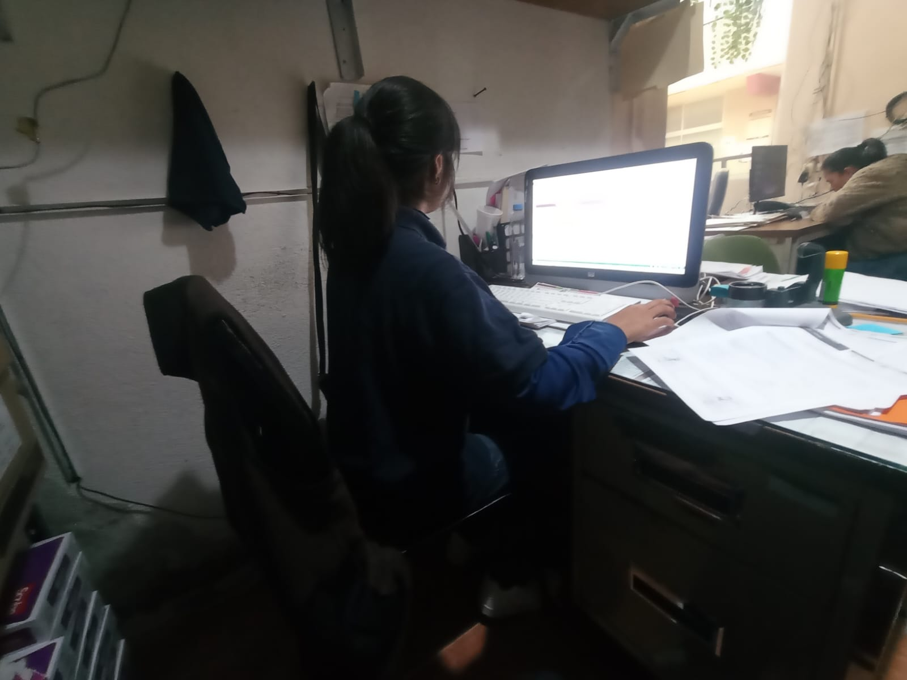
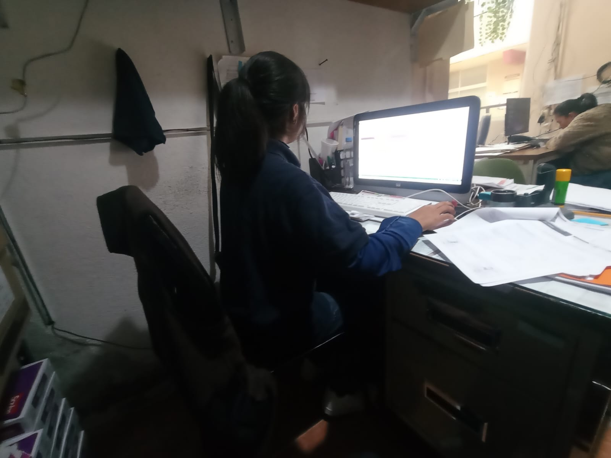
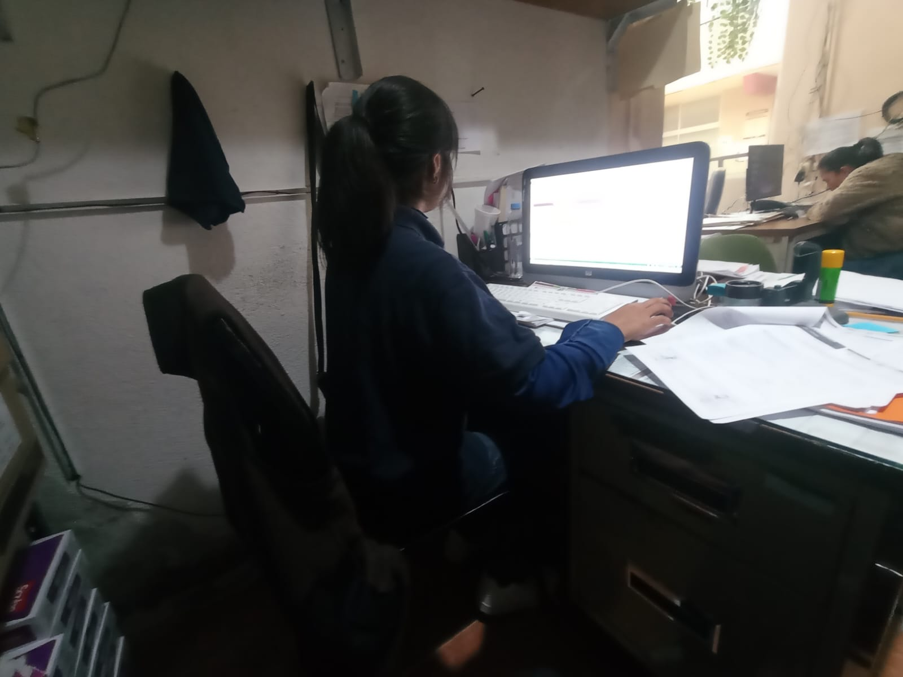
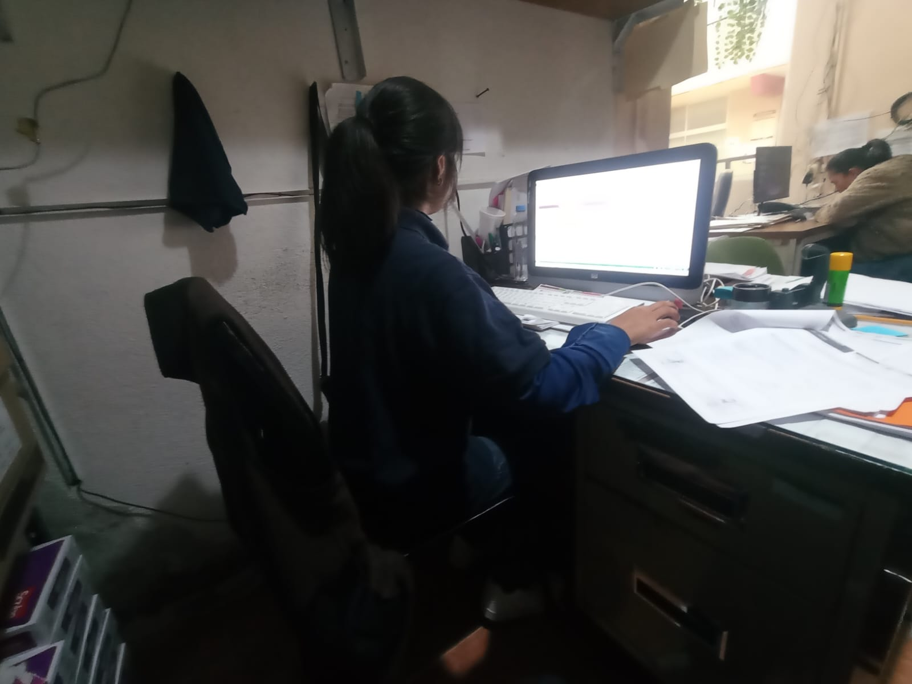

 




Gestión y actualización de servicios públicos comunitarios

El presente sitio describe las actividades realizadas en la Casa de Cultura, enfocadas en la actualización de datos de inhumaciones como parte del servicio público que ofrecemos para el bienestar y orden de nuestra comunidad.
Estas labores garantizan un manejo adecuado, organizado y respetuoso del cementerio local, permitiendo mantener registros claros y actualizados para los usuarios y autoridades municipales.
Martes: 12:00pm - 4:30pm
Jueves: 11:00am - 4:30pm
La gestión del cementerio y la actualización de datos forman parte esencial de los servicios públicos municipales. Este trabajo contribuye a la legalidad, dignidad y respeto por los espacios comunes, brindando transparencia a la población.
Creado por Brenda Jasmin Mariano Palma
Grupo: 403